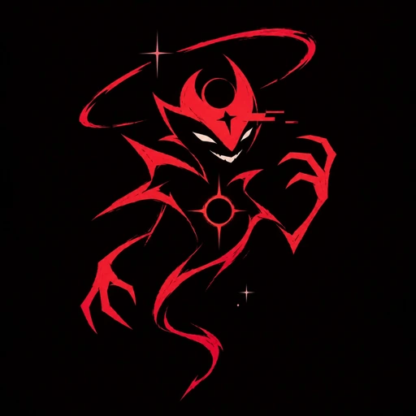
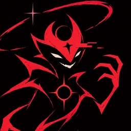
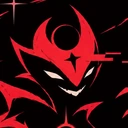

V0.8 / SICHTFREIGABE ERTEILT · 09.11.2026
Dieselbe Figur. Drei Größen für die Website.
Nur Ausschnitte und Verkleinerungen des bestätigten Masters. Kein Neuentwurf, keine neue Anatomie. Die Varianten wurden ausdrücklich freigegeben und sind jetzt im Entwicklungsstand integriert.
Original
Vollständige Figur

Rand / Peek

Kleines Icon

Erkennbarkeit bei echten CSS-Größen
Das Icon bei 16/32/64 Pixeln, Peek bei 128 und Hero bei 240 Pixeln. Keine künstliche Vergrößerung der kleinen Beispiele.
Bildtreue vor erzwungener Transparenz
Alle drei Varianten behalten den originalen schwarzen Hintergrund. Keine Farbschwellen-Freistellung, die schwarze Gesichtsteile oder rote Kanten entfernen könnte. Das ist bewusst kein transparenter Freisteller. Ein schwarzes Bildrechteck bleibt auf hellem Grund sichtbar.
Was diese Sichtfreigabe betrifft
Originaltreue, Ausschnitte und kleine Erkennbarkeit. Die ausdrücklich bestätigten Varianten werden von einer einzigen, selten und dezent reagierenden Figur verwendet. Animation-aus und Reduced Motion bleiben verbindlich. Das aktive Favicon, der öffentliche Titel, Domain, Produktion und Archiv ändern sich dadurch nicht.